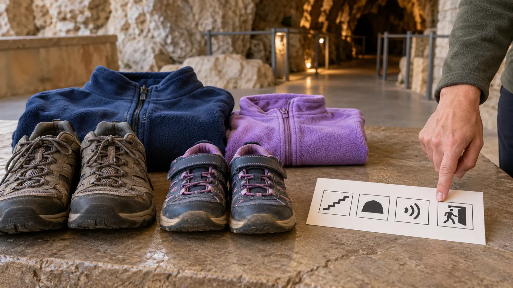

1. Body gate
The visitor can complete the operator-stated distance, stairs, standing time, narrow passages and permitted carrier plan without relying on a device the cave prohibits.
CAVE TOUR · READINESS PLAN · DATA-LED
Do not ask whether a child is “old enough for caves.” Ask whether this exact tour, on this exact day, passes four observable gates—and practice the hard parts before the ticket becomes nonrefundable.

The site's Howe Caverns family guide is earning meaningful Search Console impressions at a first-page position. The useful support page is not another Howe itinerary. It is the pre-booking readiness decision families need for any guided show cave: darkness, unusual sound, sustained walking or stairs, and a limited exit path.
Suggested use is for school-age children, but this is not an age recommendation. A younger child may pass every gate; an older child or adult may not. Disability, sensory needs, panic history, balance, cardiopulmonary limits and medication access are not character flaws. Ask the operator about the actual route and accommodations, and ask a qualified clinician when health makes the physical requirements uncertain.
A rehearsal pass means “worth calling and checking,” not “guaranteed success.” It cannot imitate temperature, crowding, wet rock, depth or the feeling of being below ground. A child who asks to stop during practice has used the plan correctly.
Record the employee's answer, date and exact tour name. Website rules and live ticket terms can change. Posted instructions and staff on arrival control. Never assume a private tour removes physical requirements; ask.
As reviewed October 23, 2026, the official Howe Caverns cave-tour page describes the Traditional Tour as a 90-minute guided experience with a 1.25-mile walk, a 0.25-mile boat ride, 139 stairs and a cave temperature of 52°F. It says the cave is not wheelchair accessible and wheeled devices are not permitted. Food, beverages, strollers and bags of any kind are prohibited in the cave; limited wearable carriers are permitted under the listed conditions. Closed-toe comfortable walking shoes are recommended and flip-flops are not permitted.
Those are current operator facts, not universal cave rules. Howe also says to arrive 15–30 minutes early to use restrooms and that all tickets for a party must be bought for the same tour time. The official homepage currently says Traditional Tour tickets must be purchased online, and the site says ticket sales are nonrefundable and nonexchangeable. Recheck the official homepage and live ticket flow immediately before purchase. The existing Howe clothing guide handles the 52°F, bag-free pack; this page decides whether to book at all.
Use the live operator checkout for the actual household total, taxes, add-ons, refund terms and required arrival. Do not multiply an old screenshot. If a private tour is the only workable sensory or pacing option, get a current quote before promising it. Compare the cost with the risk of leaving early; nonrefundable admission is not a reason to push through distress.
Eat before the bag-free checkpoint. Use the restroom on arrival even when nobody volunteers. Bring only what the operator permits: familiar closed-toe footwear, simple layers, required medication in an approved arrangement, and any confirmed sensory support. The away-from-home medicine plan helps frame the call, while the hearing-protection guide explains why an adult must verify whether a support preserves guide communication and operator compliance.
The cave may have a stable interior climate, but roads, parking, surface queues and the trip home still have weather. Check the forecast and operator notices. Ice, flooding, severe weather or a hard drive can cancel an indoor-looking day. Do not use the cave as a storm shelter unless the operator or public safety authority directs it.
Meltdown: use the practiced phrase, notify the guide and follow the operator's exit procedure. Do not threaten lost money or use the group as pressure. Low energy: skip the tour and choose the surface portion the operator confirms is open, or leave. Darkness fail: do the flashlight shadow lab at home instead; it keeps control and a visible exit.
Skip when the exact route exceeds a visitor's mobility or endurance; an essential device, medicine or support is prohibited without an alternative; early-exit procedure is unclear; enclosed darkness can trigger unsafe panic; the child cannot stay with the group or follow guide instructions; or the adult is relying on embarrassment to secure compliance. Postpone when illness, sleep debt, road weather or a sold-out schedule removes the buffer. Choose a cave or surface program whose rules match the family instead of treating one famous tour as mandatory.
Reviewed October 23, 2026 by Mr Adventure Dad Editorial Desk using the current official Howe Caverns tour and booking information linked above. The four gates, 15-minute rehearsal, call card and day envelope are editorial planning tools; they are not medical advice, exposure therapy, accessibility certification or a claim about every cave. No affiliate links are attached. Report sourced corrections through About.
MAKE THE WEEK COUNT
Build the plan your family can finish well, then leave enough energy for the next part of the day.
More family plans